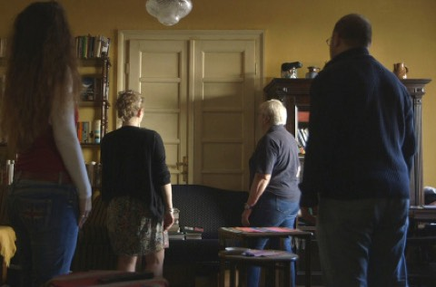
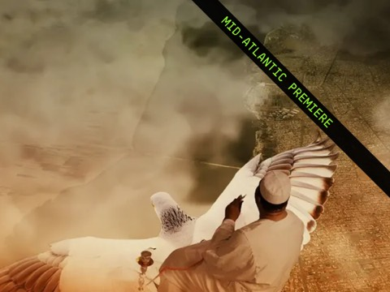

About the film
Ten years following Serbia’s democratic revolution, a look through the keyhole of a locked door in an apartment in Belgrade combines a family memoir with the portrait of a country in turmoil, to reveal a disillusioned revolutionary and her struggle with the ghosts haunting Serbia’s past and present. Filmmaker Mila Turajlic tracks down hidden video footage that had been confiscated from television stations inside Serbia and gathers records overseas, to reveal political resistance that nationalist leaders had airbrushed from the nation’s history, in a bid to strengthen their grip.
At the festival
- 2017 US Premiere · Sunday, October 22, 2017 · 4:00 PM · The Naval Heritage CenterDiscussion with filmmaker to follow screening
More films on these topics
 Rehearsals for a RevolutionPegah Ahangarani2026 · 95 min
Rehearsals for a RevolutionPegah Ahangarani2026 · 95 min
KhartoumIbrahim Snoopy Ahmad, Timeea Mohamed Ahmed, Rawia Alhag2025 · 82 min Ask E. JeanIvy Meeropol2025 · 91 min
Ask E. JeanIvy Meeropol2025 · 91 min We Bloom in Spring2025 · 19 min
We Bloom in Spring2025 · 19 min American Coup: Wilmington 1898Brad Lichtenstein, Yoruba Richen2024 · 111 min
American Coup: Wilmington 1898Brad Lichtenstein, Yoruba Richen2024 · 111 min- HomegrownMichael Premo2024 · 109 min